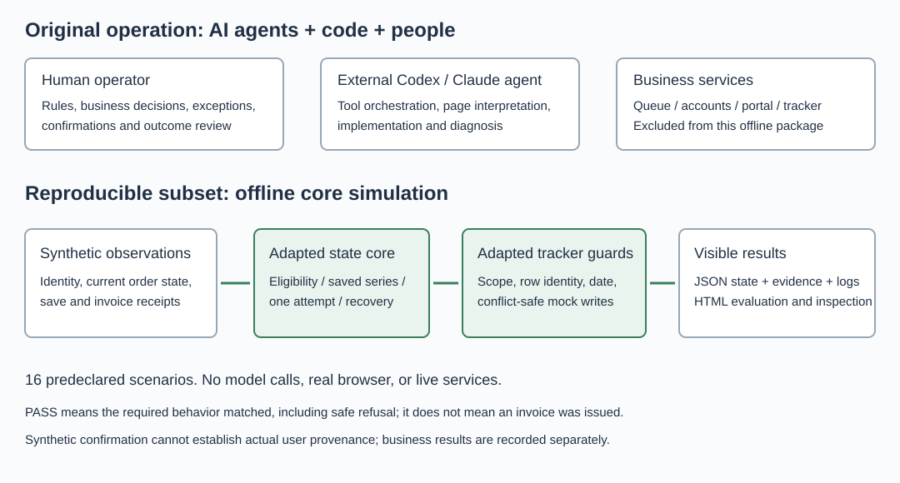

William · AI assisted business workflow · portfolio release 0.3.0
Less manual invoice work, with visible outcomes.
For every affected order, an operator had to confirm shop binding, enter the backend, find the invoice, manually change its series, issue it, and verify the result. I made this process explicit, used Codex and Claude to build and refine it, and established visual monitoring.
Walk through the exampleRead the full caseHistorical business records and the synthetic example below are separate. The example does not measure the weekly time or attention benefits.
AI coding agents handled much of the implementation and execution. I defined the workflow, made operational judgments, drove iteration, and established monitoring.
Recorded synthetic core run · static replay. These steps display evidence from an executed offline scenario. No model inference, live browser or business service is running here.
The original Codex dashboard shows five stages, from the earlier Sheet script to an automated workflow with login and access checks.
Open evolution dashboardThe returned Claude dashboard shows problem orders, outcomes, runtime/order and human interventions across 14 illustrative days.
Open operations dashboardThe Operations display uses invented layout samples, including timing and intervention values. They are clearly labelled and provide no evidence of measured business or core-run performance. The five evolution stages retain historical source descriptions.

The original workflow used external Codex and Claude sessions for tool orchestration and exceptions. This package reproduces selected Python state and tracker rules using synthetic tools. It makes no standalone model API calls.
An early live batch acted before the expected owner confirmation. Later authorization records were a mitigation; the root cause remained open. The full case explains this failure and its limits. Synthetic origin labels cannot prove a real user’s identity or consent.
From the extracted package directory, use Python 3.12 (tested with 3.12.14; code requires 3.10+). No company account, model key, network connection or third-party Python package is needed.
python3 -B -m invoice_demo --output demo-output python3 -B -m unittest discover -s tests -v
Use a new output directory, then open demo-output/review.html. All 16 predeclared scenarios matched their expected fields. Fifteen tests cover the core and dashboard assets. A correctly refused negative case is a test pass, not an issued invoice.
The package was restored in a new temporary directory and empty virtual environment on the same Mac, with network and original-source access denied. Different machines, operating systems and Python versions remain untested.
README · Case Markdown · Verification boundaries · Sources and adaptation · D3 license